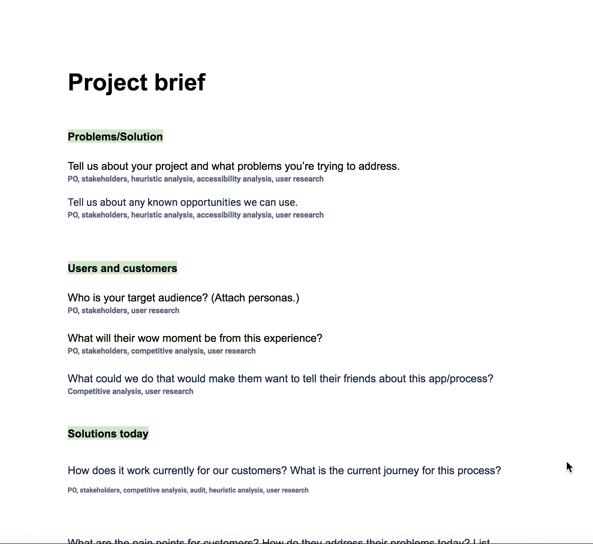

Project: ScottishPower UX process
The ScottishPower Digital Team consists of different autonomous product squads composed of UXers, developers, product owners, and business analysts.
A UX process provides a framework to carry out the appropriate UX activities for the success of a project.
Problem
SP Digital didn't have a consistent UX process in place for teams to use to ensure projects were leveraging the correct UX activities. Without a process, a team runs a greater risk of creating a product or service that's not satisfactory for their user, resulting in a less than ideal user experience and wasted time and money.
Who
The audience was the ScottishPower Digital Team which consisted of UXers, developers, product owners, and business analysts. Everyone had different levels of experience with design thinking processes so the process had to be easy to understand and easy to use.
My role
With a fairly new team and a lack of a consistent UX process, I took the initiative to head this project. Not only do I love organization, but taking this project on would help me understand design thinking better and it would make our projects even more successful which made it a task I was very passionate about.
I would research existing practices inside and outside the organization, collaborate with teammates, and test them against real projects.
Internal research
In order to understand what teammates were used to, I began by asking them how the past and current UX processes worked. The result was that though they had been trying to be more user-focused, the majority of the projects were focused on the visual design and backend code due to lack of a process as well as time constraints.
From this I knew a process would be ideal so that people could follow it to keep the user first and better understand UX activity timelines so that they could apply them to project timelines appropriately.
Online research
I wanted to see what other companies were doing to see how their practices could apply to our team. Using the Double Diamond process developed by the British Design Council I adopted the stages "Discover", "Define", "Develop", and "Deliver" to divide the process into stages. I also added "Measure" which I saw in other examples- I used it as a separate stage so that our teams could focus on using it intentionally.
Through online research, I also added UX activities that could be used in each stage of the process depending on the budget and timeline of the project. This would allow teammates to see which activities were available and to allow them to choose from the appropriate ones dependant on the type of project, allocated budget, and time constraints.
Application and team feedback
Because I was working on this at the same time as other projects, it was a bit prolonged, so I met with my UX team weekly to go over the progress and adjusted it based on feedback. This was also a good way to keep peers up to date and to match the process to their current projects.
Gap in information- project brief
I observed that the UX team often worked on projects that they didn't entirely understand from a business and/or user perspective. I created a project brief to help with this. The brief contained questions that would be answered by the assigned business analyst and product owner. Some answers would come from research, some from other stakeholders, and some from their own knowledge.
The brief would not only help UXers to understand the business perspective but it would also allow business analysts, product owners, developers and UXers feel more like a team as they would understand the purpose better and see what information is the most useful to teammates that would have otherwise been missed.
Does it work?
I wanted this framework to be successful in making this process work both for the team and for the user. I continued to share updates with the UX team and make adjustments, and also sharing it with product owners to get feedback.
One observation was that "Develop" was confusing to some teammates. When they heard "Develop", they thought of developers coding. As this was meant to be developing ideas, I changed the title of that stage to "Ideate" instead. This document had to be as easy as possible to pick up so that people could easily come on board- any minor adjustments that would be helpful would benefit this vision.
I also changed "Discover" to "Understand" as we were mostly receiving the problems from other stakeholders, and it is here we needed to understand the problem (and if it really was a problem), understand the existing solutions if there were any, and understand any other insights from stakeholders and users.
I then went through the project brief with a product owner for a specific project to see what they found easy or hard in filling out the document, and to see any other feedback they had. I was able to remove a redundant question and to keep an eye on other questions to test with other project owners to see if they saw them valuable and to see their ease in answering them.
Solution
The solution included a visual process map for people to easily understand what the process is and what its stages are. There is also a list under each stage of possible activities that can be used. The activities should be chosen at the beginning of the project by teammates so that a timeline can be more accurately created, but this should be flexible as research and other data may cause more iterations. I finalized the project brief based on research and teammate input.

Understand
- Analytics review
- Competitive analysis
- Comparative analysis
- Audit
- Sitemap
- Heuristic analysis
- Accessibility analysis
- Mobile experience
- Begin project brief
- Stakeholder meetings
- Ecosystem map
- Workshops
- Define user groups
- User research
- Interviews
- Experience map
- Empathy map
- Focus groups
- Usability testing
- Help desk feedback
- Social media feedback
- App reviews
Define
- Affinity mapping
- Define problem
- Define personas
- User flow
- Requirement prioritization
- Complete project brief
Ideate
- Ideation
- How might we
- Crazy 8’s
- Yes and
- User stories
- Sketch ideas
- Story map (with deliveries and dates)
Prototype/Design
- Wireframes
- High fidelity designs
- Prototypes
Test/Launch
- Usability testing
- A/B testing
- KPIs
- Analytics
Outcomes
As always in projects, it's important to include users, in this case fellow teammates. I was able to adjust the process and the brief based on my teammates' feedback and expertise. It was important to make this solution a good fit for the team so that they would use it and make a solution suited to our customers.
My personal learnings from this process were in large about the UX process and how it can adapt to a corporate environment.
Next steps
The desired outcome would be for the team to be on board with the process and to follow it. If they follow the necessary stages they can correctly define their objectives, users, problems, and ideate solutions. This, along with testing and iterations, will allow them to get the best solution for their customers and for the business. It's ideal that everyone is on the same page so there is more familiarity, less confusion, and better collaboration.
Educating the team on why it's needed is critical for them to pick up the process so that they understand why and how to keep the user first while catering to business needs.
The next phase of this project will be for the UX teammates to use the process and to introduce it along with the brief to test that it works for different types and sizes of projects.

Productivity
Alana Dawes

Roommate app
ScottishPower

YourEnergy quote page
ScottishPower

ATB Online website
ATB Financial

ATB Entrepreneur Centre website
ATB Financial

Lorne Rubis website
Lorne Rubis
Perch digital magazine
ATB Financial